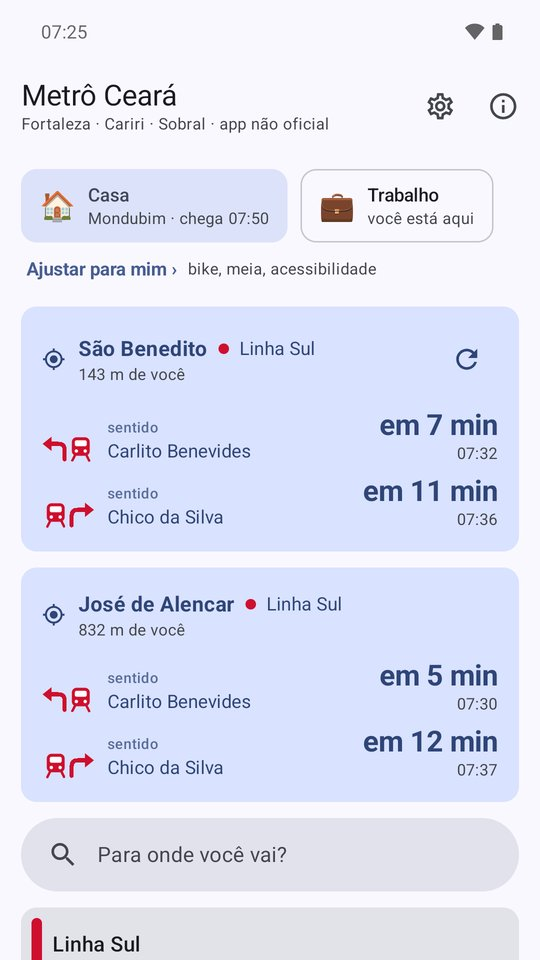
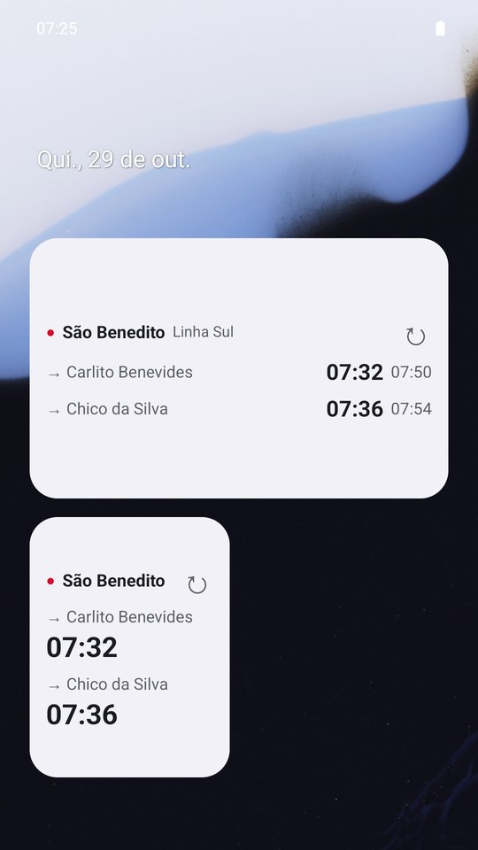
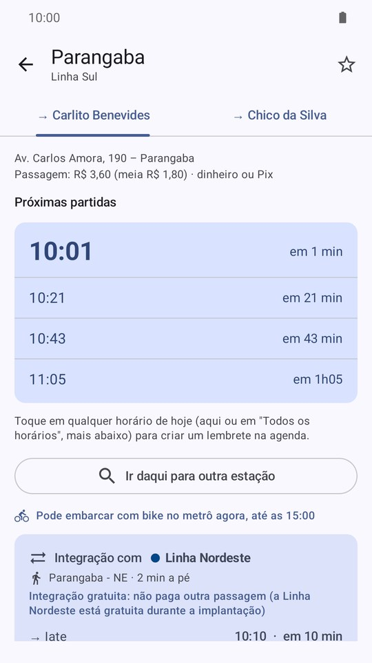
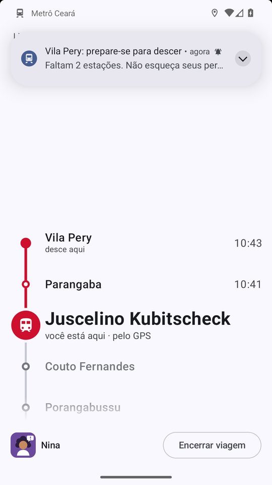
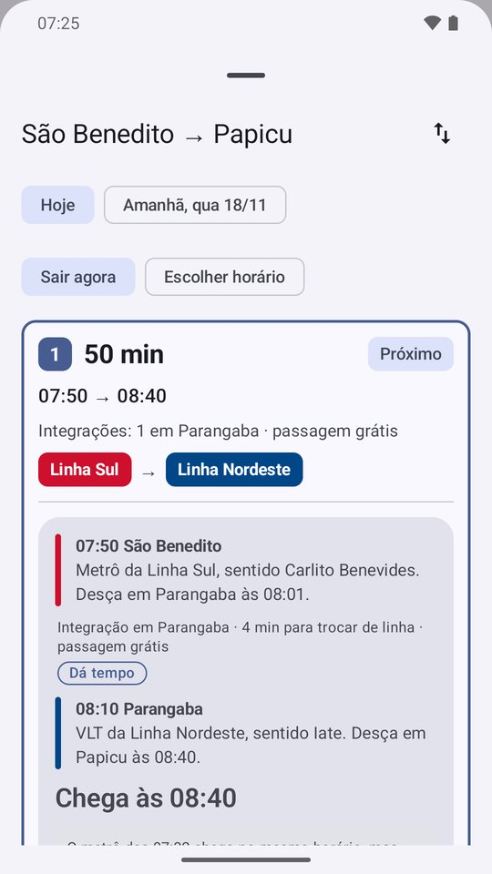
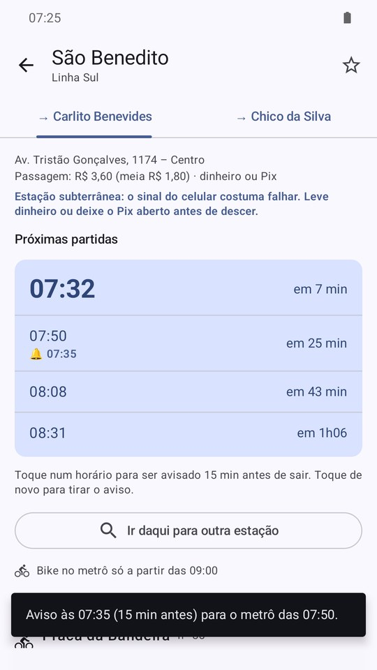
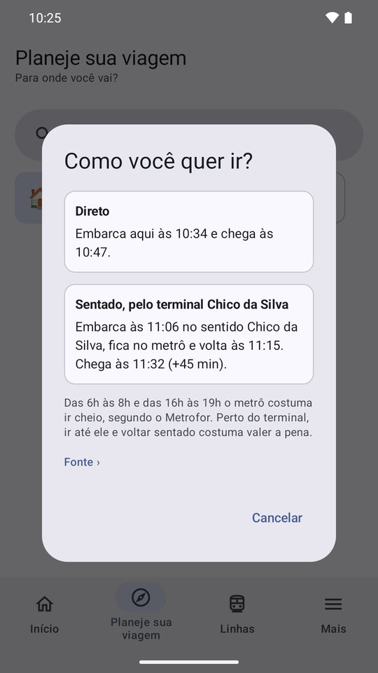

Avisos do Metrofor
Não oficial. Feito por um passageiro, sem ligação com o Metrofor nem com o Governo do Ceará. Os horários são os que o próprio Metrofor publica.
Explore
Cariri e Sobral
O app
Tudo isso no bolso, com a estação mais perto de você. Grátis, sem anúncios e sem cadastro.
🚉 Próxima partida perto de você
Pelo GPS, mostra as duas estações mais próximas e em quantos minutos sai o próximo metrô ou VLT, em cada sentido. Casa e Trabalho ficam no topo, e você escolhe a ordem do resto.
🔔 Modo viagem
Escolha o destino e guarde o celular: o app avisa duas estações antes de você descer, por notificação e voz, até com a tela desligada.
⏰ Hora de sair
Toque num horário e o app avisa na hora de sair, mesmo com a tela bloqueada, mostrando quanto falta. Salve o trajeto do dia a dia e ele avisa sozinho nos dias marcados, com os horários do dia.
💺 Ir sentado
Perto do terminal, o app mostra como ir até ele e voltar sentado no mesmo metrô, e quanto tempo isso custa.
🔁 Para onde você vai?
Diga o destino e veja o roteiro, na mesma linha ou com integração em Parangaba e Chico da Silva, saindo agora ou no horário que você escolher. Guarde Casa e Trabalho e, num toque, veja a hora de chegar.
📍 Procure o lugar
Não sabe o nome da estação? Digite "Rodoviária", "HGF" ou "UFC" e veja a estação certa, a caminhada até a porta e a hora de chegar. Na tela de cada estação, o que tem perto: hospitais, universidades, shoppings.
♿ Elevador e rampa
Veja se a estação tem elevador, rampa ou plataforma elevatória antes de sair. Com "cadeira de rodas", o roteiro avisa onde não tem elevador.
🔎 De onde vem cada informação
Cada informação diz de onde vem e quando foi conferida — o site do Metrofor, uma notícia, o OpenStreetMap —, com o link para conferir. O que é estimativa do app aparece como estimativa.
🎒 Meia e gratuidade
Quanto custa cada linha, quem paga meia ou não paga, onde tirar o cartão e o que levar, com o link para conferir no site do Metrofor.
🚲 Bicicletar e bike no metrô
A estação do Bicicletar mais perto e se dá para levar a bike no metrô agora, pelas regras do Metrofor.
📅 Horários do dia
Baixa a grade do próprio dia — inclusive sábado e operação especial, como em dia de eleição. No domingo, quando metrô e VLT normalmente não funcionam, mostra os de segunda. Sem internet, usa a última guardada.







É seguro?
- Código aberto (licença GPL-3.0): qualquer pessoa pode ver e conferir tudo o que o app faz, aqui no GitHub.
- Sem anúncios, sem cadastro, sem rastreadores.
- Sua localização fica no celular: é usada só para achar a estação mais perto e acompanhar a viagem. Nada é enviado para ninguém.
- A internet é usada só para baixar os horários publicados pelo Metrofor.
Como instalar o app completo (Android)
Quem só quer ver os horários não precisa instalar nada: abra no navegador. O app completo acrescenta o modo viagem, com aviso antes da sua estação mesmo com a tela desligada.
Na Play Store, o app está em fase de testes. Para ser testador beta e instalar pela loja, mande uma mensagem com o Gmail que você usa na Play Store. Você recebe o convite e instala pela própria loja.
💬 Quero ser testador betaO botão abre o WhatsApp com a mensagem pronta (85 99761-9295). Se preferir, mande um e-mail para giovanildos@gmail.com.
No iPhone (versão lite)
No iPhone não dá para instalar o app de Android. A versão lite roda no navegador e fica com ícone na tela inicial:
- Abra giovanildo.github.io/metro-ceara-horarios/app no Safari.
- Toque em Compartilhar (o quadrado com a seta para cima; nas versões mais novas, ele fica dentro do botão •••).
- Toque em Adicionar à Tela de Início e depois em Adicionar.
- Abra pelo ícone e toque em Usar minha localização.
A versão lite mostra a estação mais perto, os horários, o roteiro até qualquer estação (com integração entre linhas), a regra de bike e o lembrete da hora de sair, e abre até sem internet. O modo viagem, com aviso de descida com a tela desligada, existe só no app de Android.
Apoie
O app é gratuito e feito no tempo livre. Se ele te ajuda, você pode:
- Compartilhar este endereço com quem anda de metrô: giovanildo.github.io/metro-ceara-horarios
- Doar via Pix: giovanildos@gmail.com
- Sugerir melhorias ou avisar de problemas por aqui.